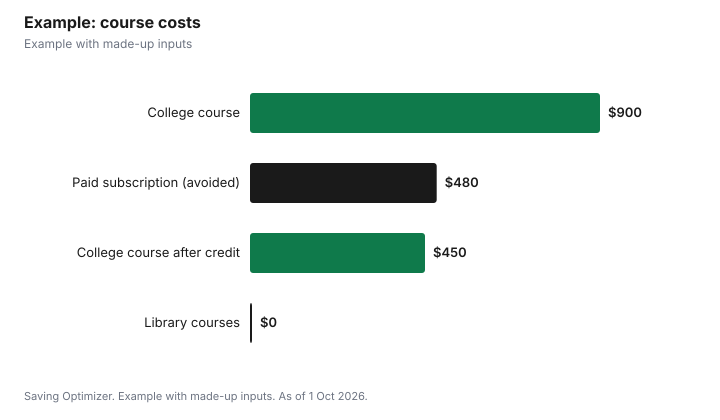

Education · Canada
Free Online Courses in Canada Through Your Library: LinkedIn Learning and More
Before you pay for an online course, check your public library. Many Canadian library systems give cardholders free access to LinkedIn Learning's thousands of courses, plus language, test-prep and skills courses. Toronto, Calgary, Vancouver and Ottawa public libraries all offer LinkedIn Learning with a library card and PIN. Toronto Public Library also offers instructor-led courses with certificates of completion and interactive courses in 71 languages. Library certificates may not show your name or link to your LinkedIn profile, so if you need a formal credential, a paid course at an eligible institution may qualify for the federal Canada training credit.
Key takeaways
- Toronto, Calgary, Vancouver and Ottawa libraries offer LinkedIn Learning free with a card.
- Toronto Public Library adds instructor-led courses, IT skills, 71 languages and test prep.
- Calgary's library version certificates do not show your name and are not linked to your LinkedIn.
- Library cards are generally free to residents; Calgary's is free to Calgary residents.
- Canada training credit: up to $250 a year of room, $5,000 lifetime, ages 26 to 65.
- Example with made-up inputs: $480 of courses for $0, and a $900 certificate for $450 after the credit.
What libraries offer
| Library | Courses | Notes |
|---|---|---|
| Toronto Public Library | LinkedIn Learning; instructor-led courses (certificate of completion); IT skills (certificate of completion); interactive courses in 71 languages; test prep; Road to IELTS; Brainfuse live help | Free with a TPL card |
| Calgary Public Library | LinkedIn Learning | Card number and PIN; certificates do not display your name; not connected to your personal LinkedIn |
| Vancouver Public Library | LinkedIn Learning, with some courses in French, German, Japanese, Spanish, Mandarin and Portuguese | For VPL cardholders |
| Ottawa Public Library | LinkedIn Learning for Library | With an OPL card |
Toronto Public Library's eLearning page also lists lectures by experts in business, management and the life sciences, video courses and ebooks on technology and business, and practice for the LSAT, MCAT, SAT, GMAT, GRE, TOEIC, TOEFL and the Canadian citizenship test. Brainfuse's adult learning centre offers live, one-on-one help with résumé writing, high school equivalency preparation and more.
Getting a library card
Library cards are generally free to residents of the library's area. Calgary Public Library says its card is always free to residents of Calgary and surrounding Indigenous communities and offers a non-resident membership to people temporarily in the city. Vancouver Public Library's card policy covers Vancouver residents and residents of other areas through resource-sharing agreements, with some non-resident card types having service restrictions. Check your own library's card page; many let you sign up online.
Certificates: what they are worth
A certificate of completion shows you finished a course; it is not a diploma or a regulated credential. Calgary Public Library says its LinkedIn Learning certificates do not display your name, and the library version is not connected to your personal LinkedIn account, for security reasons. That makes them useful for learning and for your own records, but less useful as proof for an employer. If you need to show completion, ask the library whether a named certificate is available, or describe the skills and projects instead.
| Need | Best fit |
|---|---|
| Learn a skill for work or a hobby | Free library course |
| Practise for a test | Library test prep |
| Learn a language | Library language courses |
| Show a named certificate to an employer | Paid course with a named certificate |
| Meet a regulated or licensing requirement | Course from an approved institution or body |
| Earn college or university credit | Enrol at the institution |
When a paid course makes sense: the Canada training credit
If you do pay for a course, the Canada training credit may return part of the cost. The Canada Revenue Agency says you can claim this refundable credit if you file a return, your Canada training credit limit for the year is more than zero, you were resident in Canada all year, you were at least 26 and under 66 at year-end, and you paid tuition or other fees to an eligible educational institution, or to certain bodies for an occupational, trade or professional exam. If you qualify, the CRA adds $250 a year to your limit, up to $5,000 in a lifetime, and your limit appears on your notice of assessment.
| Rule | Detail |
|---|---|
| Room added each year | $250, if you qualify |
| Lifetime maximum | $5,000 |
| Age | At least 26 and under 66 at the end of the year |
| Amount you can claim | The lesser of your limit and 50% of the fees claimed on line 32000 of Schedule 11 |
| Refundable? | Yes; if the credit is more than your tax owing, you may get a refund |
| Eligible institutions | Post-secondary institutions in Canada, or occupational skills institutions certified by the federal minister |
Library courses and most online platforms are not eligible educational institutions, so the credit applies to paid courses at colleges, universities and certified training providers. Check that your course is eligible for the tuition tax credit before counting on it. For full-time study with RRSP savings, see the Lifelong Learning Plan.
Example with made-up inputs: free first, paid later
These numbers are an example with made-up inputs. Someone wants to move into data analysis. A year of a paid online learning subscription would cost a made-up $480. Instead, they take spreadsheet and data visualization courses through their library's LinkedIn Learning for $0. After six months, they enrol in a $900 college certificate course. They are 34 and have built up $1,000 of Canada training credit room. They can claim the lesser of $1,000 and 50% of $900, which is $450. The course costs them $450 after the credit, and their room drops to $550.
| Step | Cost |
|---|---|
| Library LinkedIn Learning (instead of a $480 subscription) | $0 |
| College certificate course | $900 |
| Canada training credit (lesser of $1,000 room and 50% of $900) | −$450 |
| Net cost | $450 |

Steps
- Get or renew a library card where you live.
- Browse your library's eLearning page and sign in to LinkedIn Learning with your card and PIN.
- Pick a learning path and set a weekly time slot.
- Save certificates and notes, knowing they may not show your name.
- If you need a formal credential, choose an eligible institution.
- Check your Canada training credit limit on your notice of assessment before you enrol.
For more low-cost learning, see cheap hobbies for adults and free or reduced tuition for seniors.
Sources
- Toronto Public Library, eLearning and LinkedIn Learning, tpl.ca, as of 1 Oct 2026.
- Calgary Public Library, LinkedIn Learning for Library and Join, calgarylibrary.ca, as of 1 Oct 2026.
- Vancouver Public Library, LinkedIn Learning and Vancouver Public Library Cards policy, vpl.ca, as of 1 Oct 2026.
- Ottawa Public Library, LinkedIn Learning for Library, biblioottawalibrary.ca, as of 1 Oct 2026.
- Canada Revenue Agency, Canada training credit, canada.ca (Wayback copy of the page modified 20 Jan 2026), as of 1 Oct 2026.
- Subscription and course prices and the learner's details in the example are an example with made-up inputs.
Frequently asked questions
Can I get LinkedIn Learning free in Canada?
Yes, through many public libraries. Toronto, Calgary, Vancouver and Ottawa public libraries offer it free to cardholders, using your card number and PIN.
Do library LinkedIn Learning certificates show my name?
Not at Calgary Public Library, which says its certificates do not display your name and the library version is not connected to your personal LinkedIn account.
What free courses does Toronto Public Library offer?
LinkedIn Learning, instructor-led courses with certificates of completion, IT skills courses, interactive courses in 71 languages, test prep and live one-on-one help through Brainfuse.
Is a library card free?
Generally for residents. Calgary Public Library says its card is always free to Calgary residents and surrounding Indigenous communities.
What is the Canada training credit?
A refundable federal credit. If you qualify, the CRA adds $250 a year to your limit, up to $5,000 in a lifetime, and you can claim the lesser of your limit and 50% of eligible tuition, for ages 26 to 65.
Do free online courses qualify for the Canada training credit?
No. The credit is for tuition and fees paid to eligible educational institutions, or to certain bodies for professional or trade exams.
Researched and drafted with AI assistance and fact-checked against official Canadian sources. How we create content.
Disclosure: Saving Optimizer may earn a commission if a partner link is added later, such as an online course offer type. No partnership is claimed on this page. Education only, not tax advice.